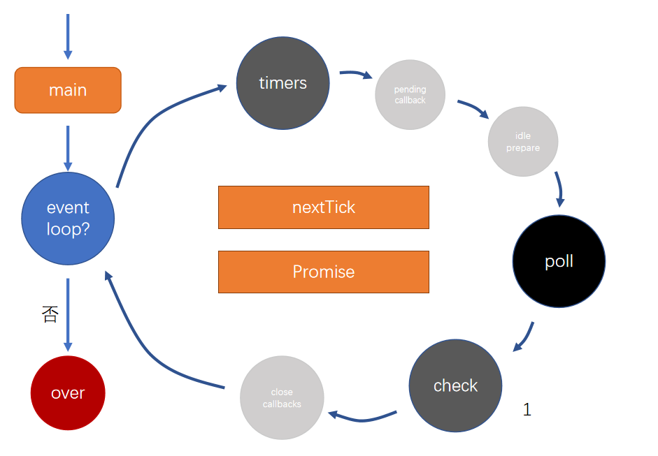

fs 和 require 的区别
fs 是读取文件内容，读到的是静态的字符串
require 是加载一个文件，并且得到他的导出值
node 中可以使用 es module 吗，为什么 webpack 里可以？
node 支持 es module 是需要开启设置条件的
webpack 都支持是因为他会对代码进行转换，注意其实能写 es module 的代码是工程化的运行代码，webpack 的插件代码和 webpack.config.js 这些文件依然只能使用 common.js。之所以 webpack 工程化的运行代码可以使用 es module 是因为 webpack 内部会对他进入转换处理成_**_webpack__**require
事件循环
node 有多个线程，但执行 js 的线程只有一个(js 主线程)
这里事件循环讲的是 js 主线程

1.首先运行启动入口函数(main.js)
2.检查是否要进行事件循环（去找别的线程还有没有一些别的事情要处理，或者别的任务还没有完成）【网络请求，读文件，计时器等等】
3.全部完成的话就 over
node 的事件循环共有 6 个阶段
1.timers(重点)【存放计时器的回调函数】
2.pending callback
3.idle prepare
4.poll(重点)【轮询队列，除了 timers 和 check 的回调都会进行此队列】【文件读取，监听用户请求】
5.check(重点)
6.close callbacks
每一个阶段会有一个事件队列，当运行到一个阶段的时候，如果队列里面有东西，就把他执行空再进入到下一个阶段
poll 队列运行方式
1.如果 poll 中有回调，依次执行回调，直到清空队列
2.如果 poll 队列中没有回调会等待其他队列中出现回调，结束该阶段，进入下一个阶段
3.如果都没有回调，js 就会卡在这个阶段，等待回调
比如有一个 setTimeOut 函数要等待 5 秒，那么 js 就会卡在 poll 这个阶段等待 5 秒，等回调函数进入到 timers 后，poll 阶段结束，进入下一个阶段
比如有 http 请求，那么 node.js 就不会停止，会一直卡在 poll 阶段等待用户的请求
check:检查阶段
使用 setImmediate 的回调会直接进入这个队列
类似于 setTimeOut(fn,0)
上述的全是宏任务
还有 nextTick 和 Promise,这两个属于微任务
每次执行一个回调之前（每一个阶段的每一个函数之前都要先检查）首先要检查 nextTick 和 promise 队列，一定要先清空
Node.js 在主线程里维护了一个*事件队列，**当接到请求后，就将该请求作为一个事件放入这个队列中，然后继续接收其他请求。当主线程空闲时（没有请求接入时），就开始循环事件队列，检查队列中是否有要处理的事件，这时要分两种情况：如果是非 *I/O 任务，就亲自处理，并通过回调函数返回到上层调用；如果是 I/O 任务，就从线程池中拿出一个线程来处理这个事件，并指定回调函数，然后继续循环队列中的其他事件。
当线程中的 I/O 任务完成以后，就执行指定的回调函数，并把这个完成的事件放到事件队列的尾部，等待事件循环，当主线程再次循环到该事件时，就直接处理并返回给上层调用。 这个过程就叫 事件循环 (Event Loop)。
无论是 Linux 平台还是 Windows 平台，Node.js 内部都是通过线程池来完成异步 I/O 操作的，而 LIBUV 针对不同平台的差异性实现了统一调用。因此，Node.js** 的单线程仅仅是指 **JavaScript** 运行在单线程中，而并非 **Node.js** 是单线程。**
Node.JS 的事件循环分为 6 个阶段：
- timers 阶段：这个阶段执行 timer*（ *setTimeout、setInterval ）的回调
- I/O callbacks 阶段：处理一些上一轮循环中的少数未执行的 I/O 回调
- idle、prepare 阶段：仅 Node.js 内部使用
- poll 阶段：获取新的 I/O 事件, 适当的条件下 Node.js 将阻塞在这里
- check 阶段：执行 setImmediate( ) 的回调
- close callbacks 阶段：执行 socket 的 close 事件回调
事件循环的执行顺序为：
外部输入数据 –-> 轮询阶段（ poll ）-–> 检查阶段（ check ）-–> 关闭事件回调阶段（ close callback ）–-> 定时器检测阶段（ timer ）–-> I/O 事件回调阶段（ I/O callbacks ）-–>闲置阶段（ idle、prepare ）–->轮询阶段（按照该顺序反复运行）…
浏览器和 Node.js 环境下，微任务任务队列的执行时机不同
- Node.js 端，微任务在事件循环的各个阶段之间执行
- 浏览器端，微任务在事件循环的宏任务执行完之后执行
Node.js v11.0.0 版本于 2018 年 10 月，主要有以下变化：
- V8 引擎更新至版本 7.0
- http、https 和 tls 模块默认使用 WHESWG URL 解析器。
- 隐藏子进程的控制台窗口默认改为了 true。
- FreeBSD 10 不再支持。
- 增加了多线程 Worker Threads